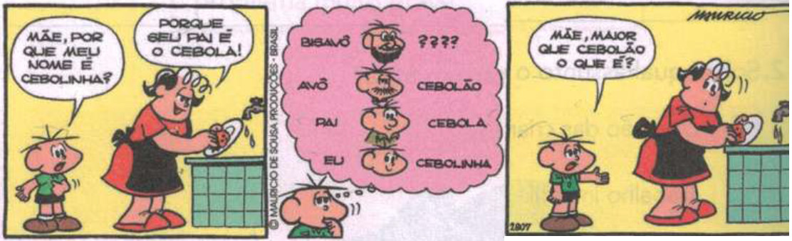

E é assim até hoje. Depois do mundo feito, vem um para achar defeito. O indígena Uánham achou na criação uma falha: era dia atrás de dia, dia atrás de dia. Noite não havia, para se dormir e descansar.
De tanto assuntar, Uánham acabou descobrindo a dona da noite: a Surucucu. Moço valente, juntou o arco e as flechas, dizendo à sua gente:
– Esperem que esse cansaço já finda. Vou e trago a noite comigo, agorinha.
Chegando à casa da Surucucu, bateu palmas e chamou:
– Ó, comadre! Venho de longe pra lhe comprar a noite. Em troca, ofereço-lhe meu arco e flechas.
A Surucucu danou-se a rir da proposta de Uánham. Depois, respondeu:
– E como se usa arco e flecha, sem mãos e pés? Sua oferta não tem serventia para mim.
Uánham voltou para a aldeia e se pôs a matutar . Passou o tempo de uma lua, se lua houvesse. Então, uma ideia brotou-lhe da cachola:
– Vou oferecer à dona da noite a faixa que uso nas pernas. Isso ela há de querer!
Cedinho, banhou-se no rio e foi direto à casa da Surucucu. Como da primeira vez, bateu palmas e chamou. Diante da oferta do indígena, ela respondeu:
– Na perna não presta, porque perna não tenho. Mas aceito a faixa. Amarre-a no meu rabo.[...]
SAVARY, Flávia. A origem da noite. São Paulo: Editora Salesiana, 2006. p. 8-9. Fragmento
No trecho “Uánham voltou para a aldeia e se pôs a matutar.”, a expressão destacada significa que o indígena se pôs a
De acordo com o texto, qual foi o objetivo de Uánham ao descobrir a dona da noite?
Baseado no texto, o que levou Uánham a oferecer a faixa que usava nas pernas para a Surucucu?
Por que o indígena resolveu comprar a noite?
No Antigo Japão, morava um rapaz que, não tendo ainda encontrado a noiva ideal, vivia sozinho. Numa noite de inverno, durante uma tempestade de neve, ele escutou uma batida na porta; foi ver quem era e se deparou com uma jovem caída na soleira. Compassivo, levou-a para dentro. A moça logo recuperou a consciência, mas seu rosto continuou branco como a neve.
Perdidamente apaixonado por sua estranha beleza, o rapaz lhe pediu que se casasse com ele. Os dois jovens viveram felizes durante todo o inverno, porém, quando a primavera chegou e as neves começaram a derreter, a moça passou a definhar a olhos vistos.
O marido pensou que talvez ela precisasse de um pouco de distração. Assim, resolveu organizar uma festa para comemorar a chegada da primavera e convidou todos os seus amigos. Enquanto os convidados se regalavam na sala, o rapaz chamou a esposa, que tinha ido até a cozinha. Não obtendo resposta, foi procurá-la e não a encontrou em parte alguma. Tudo o que restara da jovem misteriosa era seu quimono, deixado numa poça de água diante do fogão.
Fonte: PhIlIP, Neil. Volta ao mundo em 52 histórias. São Paulo: Companhia das letrinhas, 1998Por que a moça passou a definhar a olhos vistos na primavera?
Por que o rapaz levou a moça para dentro de casa?
Por que o rapaz resolveu organizar uma festa?
O trecho "Tudo o que restara da jovem misteriosa era seu quimono, deixado numa poça de água[...]." nos deixa enteder que a mulher

No segundo quadrinho, as palavras “Cebola, Cebolinha e Cebolão” servem para indicar
A pergunta que Cebolinha faz para a sua mãe, no último quadrinho, pode indicar que